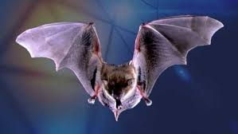
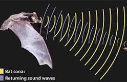

As many people know bearly all species of bats are nocturnal. They roost, or sleep, during the day and look for food at night. Night flying protects them from most predators, exposure to the sun, and high temperatures. If the night does not protect then enough they may bite to defend themselves if handled. A bat that appears to be baring its teeth is actually 'scanning' you with its unique method of echolocation - building up a picture of its environment by using a type of sonar, which is mostly inaudible to humans.
Image by google
There are 18 bat species in Colorado and they all use echolocation to hunt insects. Brown bats are one of 1,000 bat species that use echolocation to hunt for prey. Bats do this by sending out a sound wave call, which bounces off of an object, such as a cave wall or a tasty moth, and then echoes back to the bat.
image by google
Bats are nocturnal and they are sleeping during the day and awake during the night as well as hunt in the night they hunt by using echolocation to hunt insects. Brown bats are one of 1,000 bat species that use echolocation to hunt for prey. Bats do this by sending out a sound wave call, which bounces off of an object, such as a cave wall or a tasty moth, and then echoes back to the bat and they also use the night to hide from predators so they are safe but even then they still get attacked so they will attack with a bite and bats travel in hoards so the chance of them getting attack is slim.

Image by google